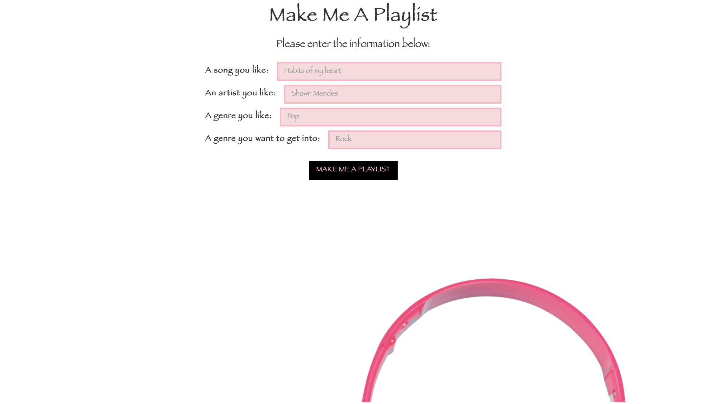
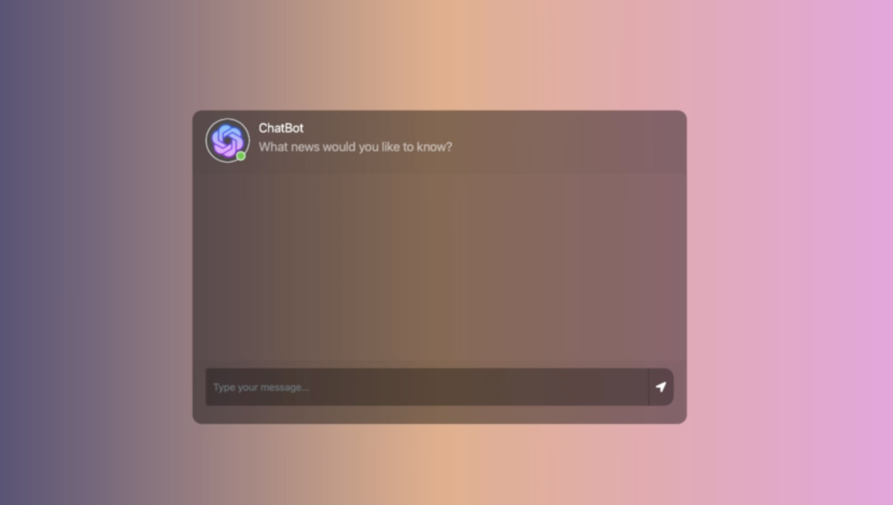
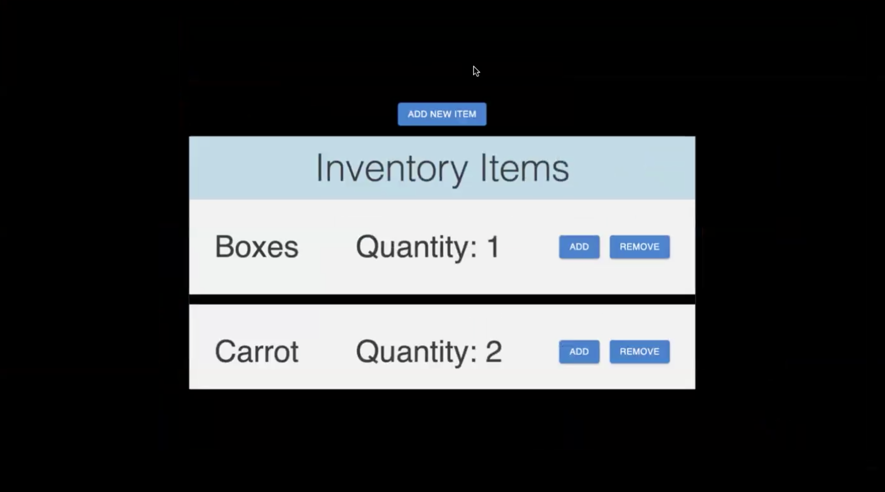

Below are highlights of my software projects . Feel free to click
on each project to be directed to its GitHub repository. Enjoy poking around my code!
I used: HTML, external CSS, JavaScript

This is a webpage I designed and developed that takes four user inputs to generate a unique,
personalized Spotify playlist.
I made it in 2021 for a school project with the intention of helping my classmates discover new music.
The four user inputs required to produce the playlist are “Artist You Like,” “Song You Like,"
“Genre You Like,” and “Genre You Want to Get Into.” After the user inputs all the values,
they click the "MAKE ME A PLAYLIST" button, after which a unique token is generated. I use this
token to produce the link to the playlist, which the user can then listen to and add to their
library.
I used: Python, JavaScript, Open AI API, Node.js, Firebase, HTML, CSS

This is an AI chatbot that I and another software engineer
deisgned and developed. The chatbot gives users news about topics that they
are interested in. You tell it what you want to know about, and it searches the latest news
articles for the most relevant pieces, finally providing you a short summary/headline and
links to the articles used, so that you can read further if you choose.
I used:
JavaScipt, Next.js, MaterialUI, React, Vercel, Firebase, HTML, CSS

This is an inventory management application that I deployed with Vercel. The app is connected to a
Firebase database, so that any change in the inventory is reflected in the database. Through this
inventory management app, users can add items, adjust their quantities, and delete items. This
provides an extremely simple and accessible user interface for database management.